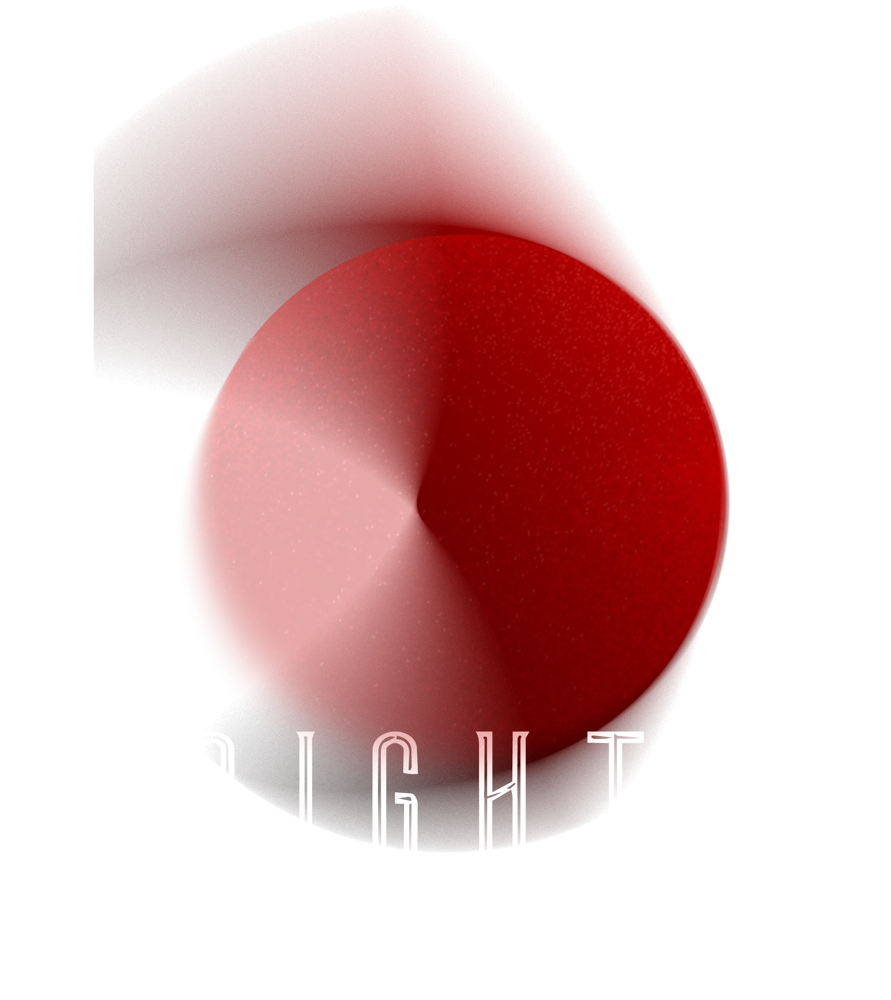
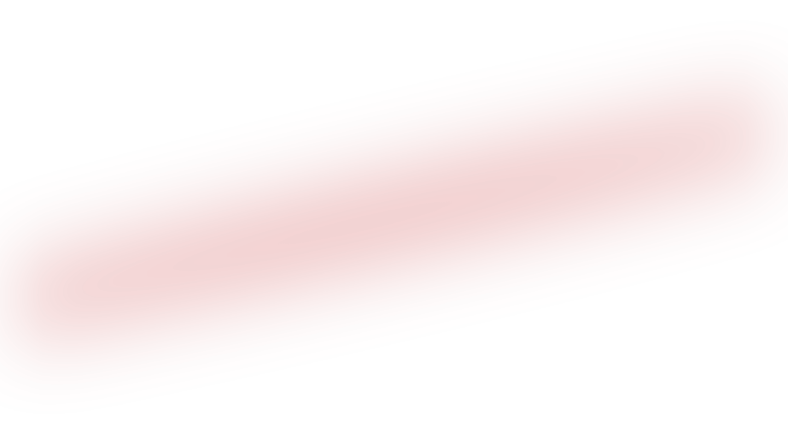

Matariki Nights is a free, public festival running across Wellington's Courtenay Precinct over the Matariki public holiday weekend.
Across four nights, we'll be activating venues, streets and spaces with contemporary Māori artists, visual artists creating works in public view, musicians performing waiata reo Māori across local venues, and kai inspired by the natural world Matariki asks us to reflect on.
You can view artists, venues and event details below.
View Events
The rising of the Matariki star cluster (known internationally as the Pleiades) and the single star Puanga mark the start of the Māori New Year. Their visibility in the pre-dawn winter sky signal a time to reflect on the year that has passed, celebrate the present, and look forward to what's to come.
Puanga appears in the evening sky shortly before Matariki rises. It is more visible to some parts of the Wellington region and the whetu (star) acknowledged by our mana whenua iwi Te Āti Awa.
The principles of Matariki and Puanga are woven through everything we do during this time:
Remembrance. Honouring those we have lost since the last rising of Matariki.
Celebrating the present. Gathering together to give thanks for what we have.
Looking to the future. Looking forward to the promise of a new year.
The 2026 national theme is Matariki Herenga Waka — For Everyone. It speaks of waka — of peoples — coming alongside one another. Matariki Nights is built around that idea: a celebration grounded in Māori leadership of the kaupapa, with all communities welcomed as manuhiri.
Move and be moved by four nights of live entertainment from celebrated Māori artists, musicians and performers. Gather your friends and whānau for experiences that invite connection across the Arts community.
Events for Matariki Nights are currently being added and will go on sale from 22 June, check back here later.
Events for Matariki Nights are currently being added and will go on sale from 22 June, check back here later.